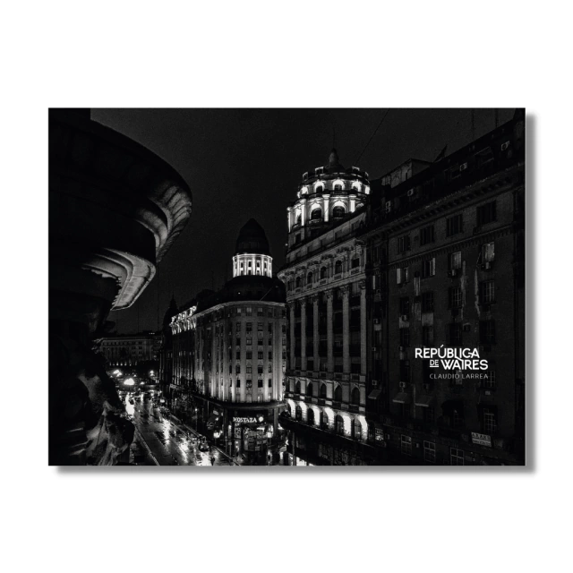

La obra como investigación work-in-progress
Compiladores: François Soulages y Alejandro Erbetta
Autores: Paula Bertúa, Ricardo Biriba, Julio Fuks, Cora Gamarnik, Livio Giordano, Diego Guerra, Francisco Medail, Eduardo Médici, Daniel Merle, Celeste Rojas Mugica, Amélia Vitória de Souza Conrado, Alfredo Srur, María Fernanda Troya, Jorge Zuzulich.
Foto de tapa: Eduardo Médici
$7.000,00

REPÚBLICA DE WAIRES. Claudio Larrea
República de Waires
Claudio Larrea
Ediciones ArtexArte
Pág. 1148. Año 2022
Medida 21 x 28 cm
ISBN 978-987-48603-0-9.
$35.000,00
El arte contemporáneo y, por lo tanto, la fotografía
La fotografía es uno de los núcleos de “el arte contemporáneo”; ¿Y si ella fuera el corazón? Tal es el principal problema que aborda este libro. Desafíos tanto para el arte contemporáneo como para la fotografía.
$7.000,00